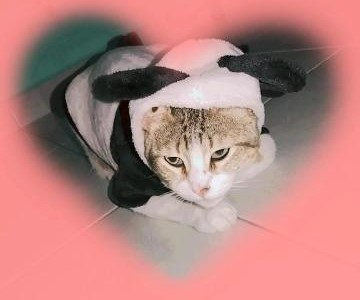

Aunque esta página está dedicada a mí, sé que hay muchos otros gatos que no tienen la misma suerte. Si deseas ayudar, las donaciones irán destinadas a refugios locales y a proporcionar comida y atención médica a gatos en necesidad. ¡Gracias por ser parte del cambio!

Depósito en cuenta
Zurisarai Delgado Rodriguez
Cuenta Bancomer: 3214567890147852
Clabe: 014785236962587